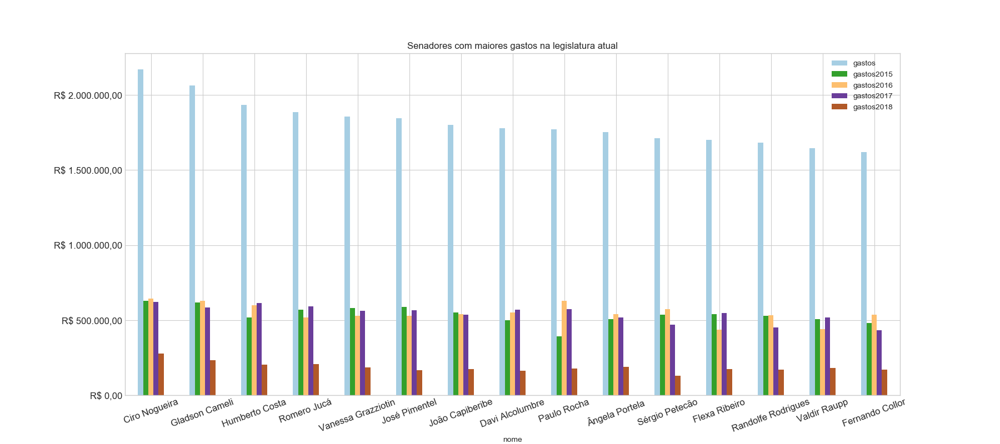

BRASIL - 55ª Legislatura
Informações de despesas de senadores
Dados coletados em
02/05/2018 às
18:46:47



 podem ser reordenadas com um clique. As despesas de um senador são detalhadas quando se passa o mouse sobre o montante.
podem ser reordenadas com um clique. As despesas de um senador são detalhadas quando se passa o mouse sobre o montante.| Nº | Foto | Nome |
Despesas no Mandato |
Participação |
UF |
Partido |
Escritório e Gabinete |
Benefício Moradia |
|---|